来源：https://zjvd064plw.feishu.cn/docx/VdVPdhexUooxK3xkTbMciwZenLg
大家好，我是发条
生财两年专业潜水员，一直旁观生财优秀大佬圈友的各种搞钱姿势和人生感悟。总觉得相比之下自惭形秽，没什么值得分享。直到今年终于在想和做之间突破了一些桎梏。
在开始之前例举一下自己最开始的一些困境
我是浙江舟山人，大学来杭州读书，毕业后就一直在杭州讨生活。从事了好几份工作，都是和运营相关。去年过年回老家，和家里人交谈，母亲觉得我在杭州多年既没有攒下什么存款，也没什么事业上的建树。距离在杭州落脚过上有车有房的生活相差甚远，不如就回到老家，有家里帮衬过得也可以滋润些。
回想这几年这几年除了上班还开过外卖店、投资过咖啡店，这些败家行为母亲没有一一数落，但对一个自命不凡的青年，这些实打实的败绩跟当初自己踏上征途时“王侯将相宁有种乎”“我命由我不由天”的豪情，交织成无形的嘴巴子，打的自己脸啪啪作响，想不出任何给自己辩解的话。
偶然一次散步到河边打开生财日常看起了帖子，恰巧刷到了曜文老师的《小红书无货源电商实战分享》。
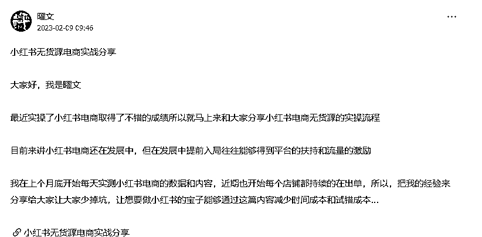
一下子打开了我的思绪，我曾和一个朋友讨论过闲鱼无货源电商，他想拉着我做。而我例举我俩没电商经验、没货源品质不靠谱、发货不稳定、价格没有优势巴拉巴拉一堆问题难点。朋友苦劝我无果，自己做了起来，几经波折后做大做强收入可观。我呢，杞人忧天蹉跎度日。
我像掉进“中等认知陷阱”，说有见识吧也不足以拨开迷雾见青天，遇到机会还倦怠的什么都看不上执行力拉跨。（可能很多从小城市出来的人，应该和我一样，总是在遇到机会的时候，内心有声音在认同想要做，但是因为害怕，身体选择了拒绝）
由于确实想要做点什么证明自己，也是受到母亲的刺激，这次就决定无论如何，一定要做，无论输赢。
之后，跟着曜文老师的文章，他非常详细的拆解了小红书无货源电商从零开始的实操步骤。并对小红书平台进行分析。如他文章里的一句话“如果有做过闲鱼无货源电商的你那么你看完这篇内容你会觉得我得赶紧入局，如果你对于无货源电商还不是那么理解相信看完这篇内容你会有所启发”。
不想再做孔乙己，这次我要动起来。我搜集小红书电商的信息，发现小红书从22开始到现在对开店的门槛一降再降，甚至可以没有粉丝要求没有营业执照要求即可开店。这无疑是官方对商家需求的表现。所有的机会都藏在政策里。唯一的资金投入店铺押金只需要1000元，在提现店铺营业收入之前不交也行，可以说是零投资，这也非常符合我当下的需求（少花钱，被实体干怕了），于是说干就干，立马上闲鱼买了好几部手机，准备大干一场...
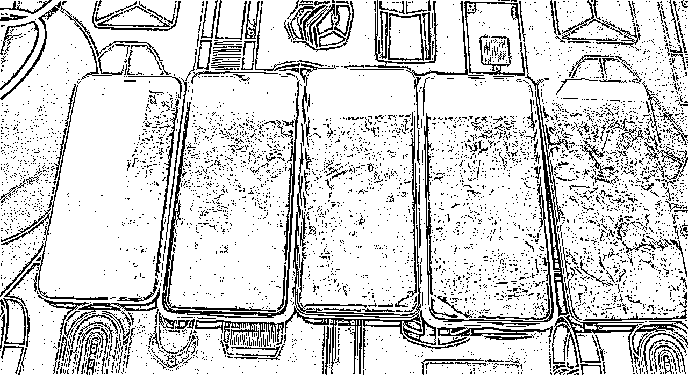
小红书的推流逻辑跟其他电商不同，你发布图文视频挂上商品，首页会推荐内容，你的笔记被用户看到用户觉得ok，根据购买同款的引导即可下单。逻辑上来讲自然流量才是成交的大头，这对比淘宝之类的拼搜索展示来说对素人友好太多。一开始我注册了两个号，按照：找定位→养号→选品上架→视频测品→继续选品→继续测品。
过程中，选品就是疯狂刷别人的视频，专挑粉丝少成交多。刷到了就拼多多1688比价，再去抖音找视频。完全不需要担心自己的技能缺失，只要会抄就可以，别人已经帮你铺垫好了。两个号一礼拜内都开了单。刚开单的心情真的太好了，明明才是赚了十几块钱，却能有无比的愉悦。这种赚钱的感觉，和在公司里收到薪酬的感觉完全不同，那是一种"创造"的喜悦。
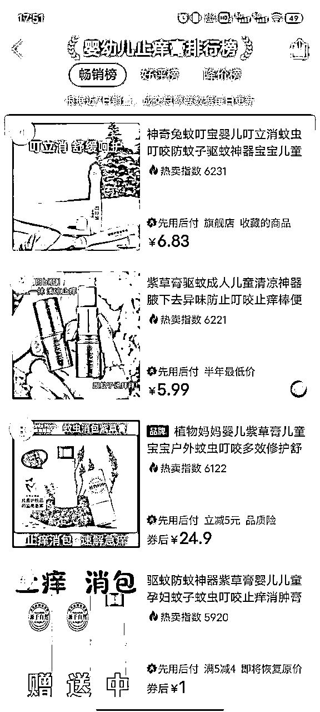
现实中的故事，往往都不会那么顺利，我很快遇到了第一个坑：
看着零零散散的订单，贪欲就上来了，我想着怎么样能可控的爆款爆文更快的爆单，我开始在抖音挑解压类的视频（此类视频小红书基本不能推广且会被提示优化）跟商品混剪，在微博找时事热点视频用转折拼接的方式跟商品嫁接（时事热点碰就是大概率gg）。
我也尝到了甜头，一小时就爆出了十几万的浏览，虽然成交不多，但以量取胜的想法在我心里深种。
消息通知都是笔记违规通知和账号风险提示，刚开张没想到就要歇业了，急功近利带来自然是适得其反。两个号被封禁7天，两个号连续的笔记发布没有超过50的浏览量。即使用之前数据不错的视频和封面也是一样的效果。
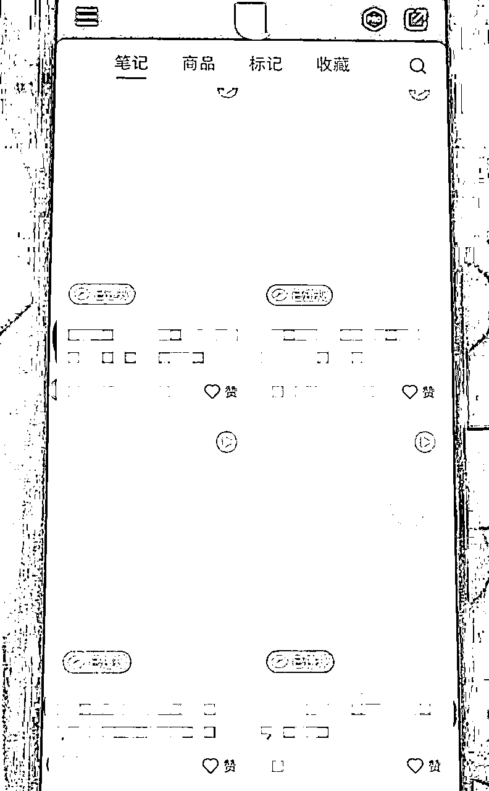
如果是之前的我，可能看到这些违规，就要放弃了，但是这次反倒是之前零散的订单给了我继续下去的勇气。它告诉我，这里真的有机会，只是我方法用错了。
因为看见过，所以我很笃定的相信。
基于多年运营的经验，接下来我应该要做的第一件事，是复盘，赚到钱是做对了什么，被违规是做错了什么，再去想接下来要怎么做。
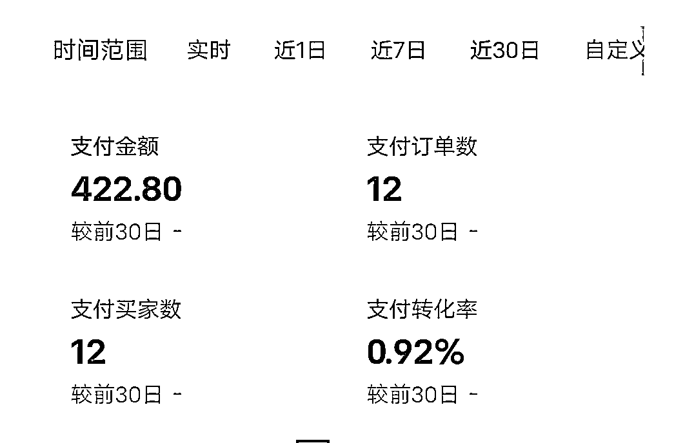
各个电商平台的商品榜单，考古加，禅小红，千瓜，灰豚。以上可以找到关键热词，往年同期的热销商品，相关类目近期的热门商品，通过视频变现的热门商品。再加上一有空就刷小红书看看有没有一百粉丝以下，视频爆文出单一百单以上的个人店。
这样的节奏让我忙碌且充实。每天的睡眠时间也减少了。这次重新开始手上只有一个账号。给大家参考下，我一天的测品在五到八个，每个商品的视频两到三个不等。头七天的更新有互动没成交，总是不自觉地刷新商家端首页，心里就像悬着颗大石头。
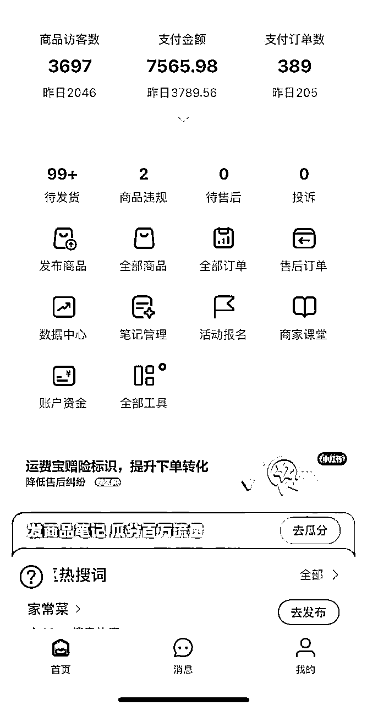
现在想想是否能对抗这种枯燥和煎熬就是改变自己的关键，终于一个视频爆单，醒来的早晨看着99+的待发货，心里五味杂陈。时间其实很短不过月余，但像我这样一般上班一边副业，每天投入所有业余时间选品制作视频测品，让人更容易焦虑紧张。
有了之前的教训这次我没有在玩什么花活，为了保证视频不被违规下架和同行举报我购买了爆款的视频商品开始自己拍摄实拍，产出新的视频继续承接爆款视频带来的流量。一条视频的长尾流量超出我的想象，更加让我确定了小红书是最适合普通人做副业的电商平台，在我保险起见减少更新频率后，每天还是有不少的订单量，且能带动我其它视频零散的成交。
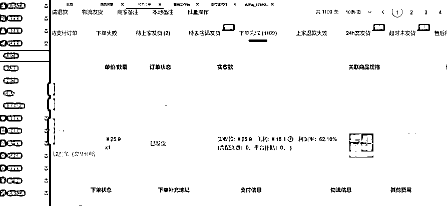
这里自己的体会是：尽量让自己的商品是同一个类目下，足够垂直且相关。举个例子客户进来买碗顺便带走了一套餐具，你如果放了个遥控飞机就格格不入了。
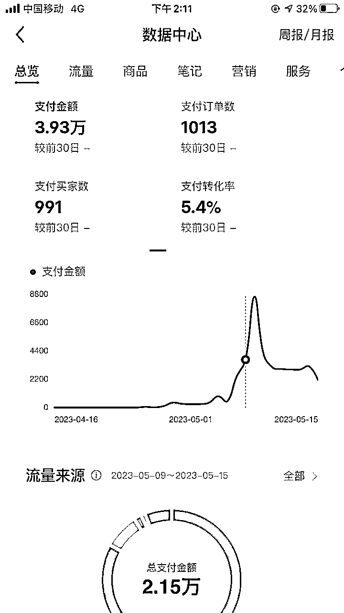
注销的店铺也完成了流程，这次注册了个体店铺并绑定了子账号。尝试主账号负责上品，子账号各自不同定位带货。一个主账号方便后台管理。同时找了一个有意向的好朋友把我的方法论交给他，想测试一下这个是否能复制。
时间投入的大头从每天的视频剪辑发布变成了订单发货和一些售后处理。采购商品实拍的方式比搬运安全许多。个体号绑定的子账号很快开了单。
我从忙活一个月1000营业变成了一个账号就能有3w多的利润。
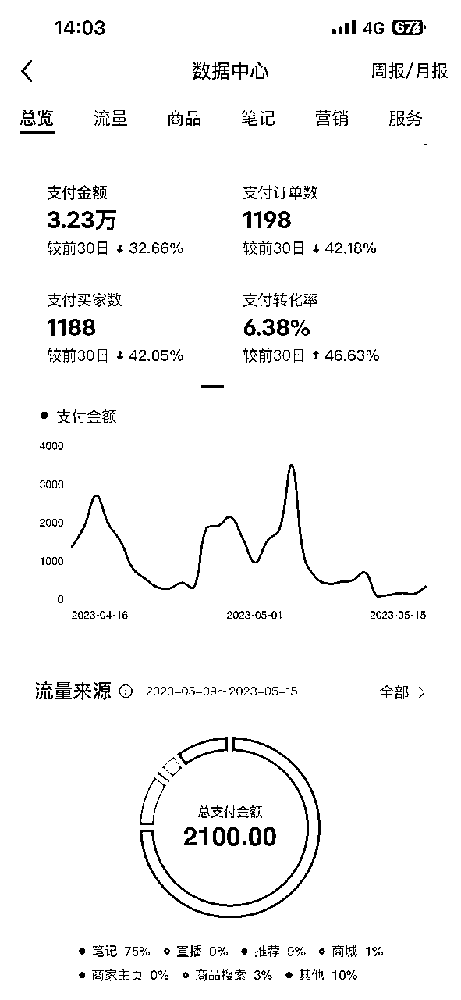
气人的是好朋友这个从来没碰过小红书的直男，按我给的选品第一天就开单，在我账号上零散出单的品，在他的账号上单品卖出了六万块，原来小丑是我自己，欧皇非酋是真的存在的。同时也可见小红书的无货源电商在有执行力的前提下，对知识要求、资源要求都极低。平台开卷考般的每周公布热词，提供相关的流量扶持。也是正向直白的引导商家选品和创作。
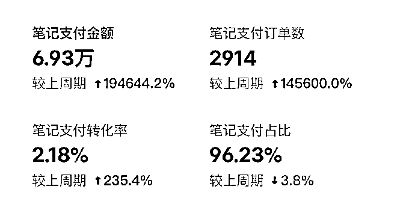
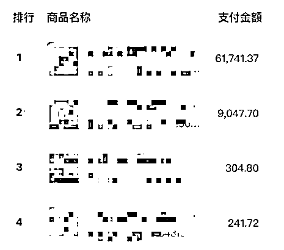
我对小红书无货源电商的理解是，开一个几十万上百万利润的小红书店铺很难很难，开出几十个上百个一两万利润的小红书店铺相比有更大的可能。这个事情的投产比我打工高很多，我去跟老板提了离职，老板挽留我的时候，我说我之前上班像是一个在麦田里寻找最大麦穗的人，而现在小红书无货源电商就是我选择的麦穗。
小红书无货源电商毫无疑问可以是一份不错的副业，对于拿到结果的人也可能是一个创业起步的机会。以前的我肯定会说那么多人已经在做了因此望而却步，现在迈出第一步的感觉真好。接下来在小红书商业化的道路会有更多的机会，无货源转成有货源，笔记带货的内测转公测，粗暴地说，干就完了。
这篇文章是为了记录我人生路上的一次突破，也是为了分享出来，能够激励与我有一样困境的朋友。我们每个人生来都有换个"活法"的权利，只是我们是否愿意而已。
道阻且长，行则将至；行而不辍，未来可期。
再次感谢曜文老师的启发！欢迎有想法的朋友一起交流学习。